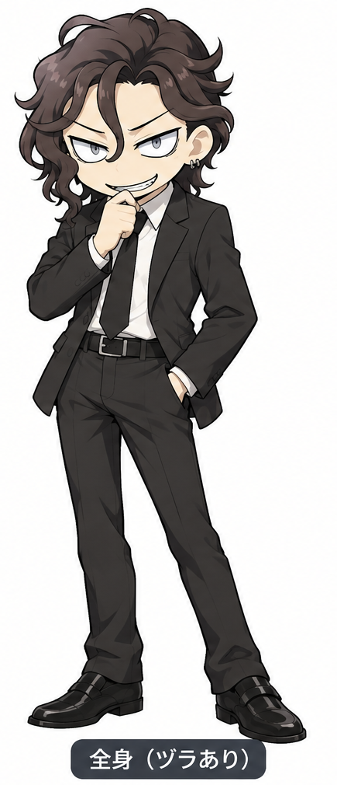

ヅラよ、帰ってこい！
～風に飛ばして、翌日に戻ってくるヅラを待つゲーム～
1日目帰還回数：0回

① ヅラを選ぶ ② 強風で飛ばす ③ 翌日、戻ってくるか運試し！
※結果はゲーム内の演出です。ページを開き直すと最初から遊べます。
公開後は、このページのURLを添えて投稿できるよ。
～風に飛ばして、翌日に戻ってくるヅラを待つゲーム～

① ヅラを選ぶ ② 強風で飛ばす ③ 翌日、戻ってくるか運試し！
※結果はゲーム内の演出です。ページを開き直すと最初から遊べます。
公開後は、このページのURLを添えて投稿できるよ。